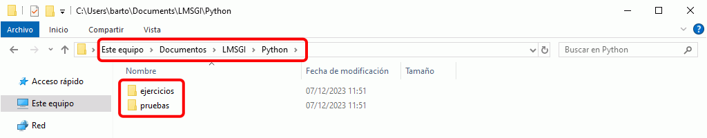

Tema de color recomendado para el curso de Python
El tema de color es un aspecto muy personal por lo que se deja a elección del alumno el tema de color empleado.
En las capturas de los apuntes se empleará el Tema Dark+ (default dark).

Esta es la configuración de Visual Studio Code que se recomienda para seguir este curso.
Esta lección indica la configuración recomendada, pero no detalla los pasos para configurar Visual Studio Code. En los apuntes Informática general puede consultar lecciones generales dedicadas a Visual Studio Code, como Presentación general, Instalación, Personalización y otras lecciones, que le pueden ser de ayuda si no conoce Visual Studio Code.
El tema de color es un aspecto muy personal por lo que se deja a elección del alumno el tema de color empleado.
En las capturas de los apuntes se empleará el Tema Dark+ (default dark).
Esta es el área de trabajo recomendada para seguir este curso.




No es necesario añadir ninguna preferencia de configuración específica.
Estas son las extensiones que se aconseja instalar para seguir este curso.

Autor: Microsoft (Don Jayamanne)
Marketplace: Python
Repositorio GitHub: Python
Don Jayamanne, el creador de la extensión Python trabaja en Microsoft desde noviembre de 2017. Desde entonces, la extensión se publica como extensión oficial por parte de Microsoft y además se publica regularmente todos los meses.
En el Blog de Python en Microsoft se anuncian las novedades mensuales en la extensión Python:
Al instalar la extensión Python en Visual Studio Code, se debe instalar el módulo pylint y es conveniente instalar un módulo de autoformato.
En versiones anteriores de la extensión Python, al recargar Visual Studio Code tras instalar la extensión, se mostraba un aviso indicando que se debía instalar el paquete pylint. En versiones actuales, este aviso se muestra cuando por primera vez se guarda un programa. Independientemente de cuando se muestre el aviso, haga clic en "Install" para instalarlo.

Se abrirá en la parte inferior una ventana de terminal en la que se ejecutará la instalación de pylint y de sus dependencias. Si la instalación se realiza correctamente, se mostrará el aviso correspondiente. Puede cerrar la ventana haciendo clic en el icono de cierre.

La configuración inicial de Pylint en VSCode es una configuración mínima (documentación de VSCode) que por el momento no modificaremos.
La lista de mensajes de error y avisos de Pylint se encuentra en el apartado Pylint Features de la documentación de Pylint. En Wikidot hay también una lista ordenada por código de error, pero no sé si está actualizada.
Al formatear código por primera vez después de instalar la extensión Python, Visual Studio Code pregunta por el módulo de autoformato que queremos utilizar. Actualmente (febrero de 2019), las opciones disponibles son:

En estos apuntes se utiliza el módulo black, pero se podría utilizar otro módulo. El formato aplicado no afecta al resultado ni a la velocidad de ejecución de los programas. Haga clic en "Use black" para instalarlo.

Se abrirá en la parte inferior una ventana de terminal en la que se ejecutará la instalación de black y de sus dependencias. Si la instalación se realiza correctamente, se mostrará el aviso correspondiente. Puede cerrar la ventana haciendo clic en el icono de cierre.

Se creará una carpeta .vscode con el archivo de configuración del área de trabajo settings.json. Este archivo contiene la preferencia de configuración que indica a Visual Studio Code que queremos utilizar el formateador black.

No es necesario añadir ninguna tarea específica.
Estos son los atajos de teclado que se aconseja añadir para seguir este curso.
// Atajos de teclado recomendados para el curso Introducción a la programación con Python de www.mclibre.org
[
{
"key": "ctrl+alt+right",
"command": "workbench.action.terminal.focus"
},
{
"key": "ctrl+alt+left",
"command": "workbench.action.focusActiveEditorGroup",
"when": "terminalFocus"
},
{
"key": "ctrl+alt+f5",
"command": "python.execInTerminal"
},
]
Estos dos atajos permiten pasar el foco de la ventana de edición a la ventana del terminal y viceversa.
Nota: Estos atajos están pensados para una distribución de las ventanas en vertical (con el editor a la izquierda y el terminal a la derecha). En caso de preferir otra distribución. Por ejemplo, con el editor arriba y el terminal abajo, convendría modificar los atajos para que utilizaran las flechas arriba y abajo (up y down).
Este atajo permite ejecutar el programa de Python que se esté editando. El programa se ejecuta en la ventana de terminal PowerShell de Visual Studio Code. Se ha elegido la tecla F5 ya que esta es la tecla que permite ejecutar programas en IDLE.

Si no se define el atajo de teclado, el programa se puede ejecutar igualmente haciendo clic derecho en el cuerpo del programa y eligiendo la opción "Ejecutar archivo Python en la terminal".